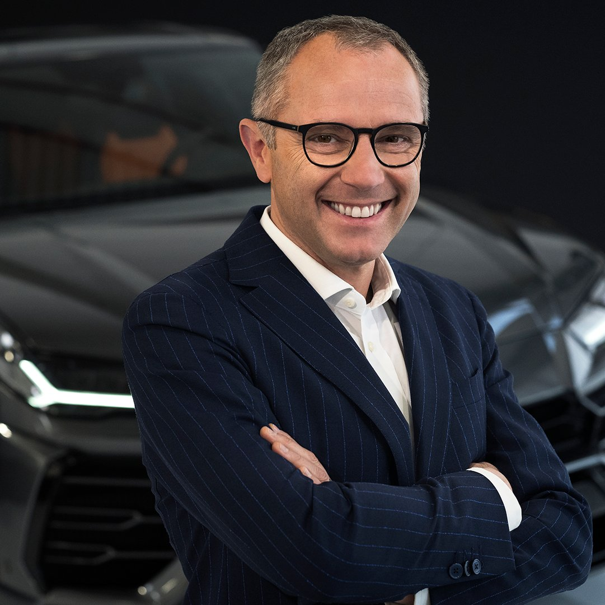
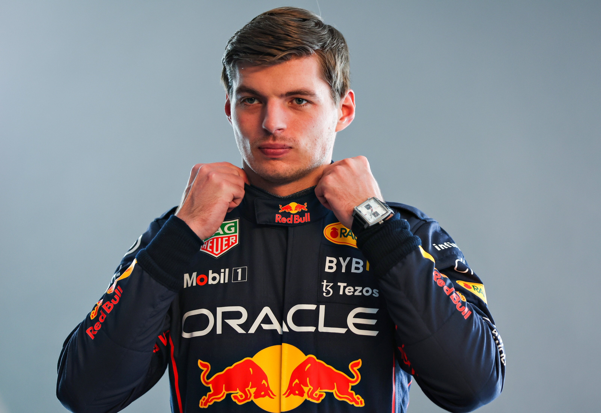
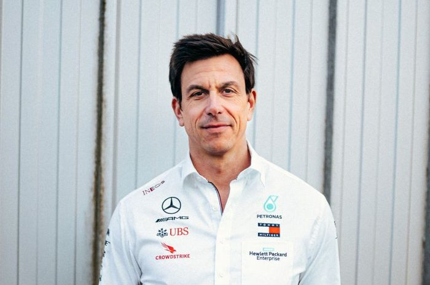

Presiden

Karier
Stefano hanya bekerja untuk satu tim, Ferrari. Ia bergabung dengan Ferrari sesaat setelah ia lulus kuliah di 1991,[2] di mana saat itu ia ditempatkan di bagian administrasi fiskal.[3] Antara 1992 sampai 1994, ia menjadi race director di Mugello, dan dipercaya mengawasi balapan MotoGP, DTM, dan balapan-balapan lainnya.[4] Pada 1995 ia dipromosikan menjadi salah satu kepala di departemen balap, dan kemudian menjadi manajer tim di Desember 1996, di mana ia bertahan di jabatannya sampai Januari 2001.
Setelah sempat menjadi manajer logistik,[5] ia lantas dipromosikan menjadi direktur sport di 2002. Dan pada 12 November 2007 Stefano kembali dipromosikan, kali ini menjadi team principal menggantikan Jean Todt. Sekarang ia sebagai presiden F1
Juara Dunia

Max Emilian Verstappen (pengucapan Belanda: [mɑks eːmiliɑn vɛrstɑpən]; lahir 30 September 1997) adalah seorang pembalap mobil profesional Belgia-Belanda,[3] yang bersaing di bawah bendera Belanda di ajang balap Formula Satu, dengan tim Red Bull Racing. Ia adalah putra dari mantan pembalap F1, Jos Verstappen.
Di Grand Prix Australia 2015, di umur 17 tahun dan 166 hari, ia menjadi pembalap termuda yang berkompetisi dalam Formula Satu. Setelah menghabiskan musim 2015 dengan Toro Rosso, ia memulai musim 2016 bersama dengan tim asal Italia ini sebelum dipromosikan ke tim induk Toro Rosso, yaitu Red Bull, sebagai pengganti Daniil Kvyat. Ia kemudian memenangkan Grand Prix Spanyol 2016 dalam lomba pertamanya untuk Red Bull pada usia 18 tahun, dan menjadi pemenang termuda sebuah Grand Prix,[4] dan menjadi pemenang balapan F1 yang paling pertama di bawah bendera Belanda.[5] Setelah memenangkan Grand Prix Abu Dhabi 2021, ia menjadi pembalap Belanda pertama yang memenangkan kejuaraan dunia Formula Satu,[6] dan merupakan juara dunia ke-34.
Sampai Grand Prix Prancis 2022 , Verstappen telah memenangkan 27 balapan termasuk kemenangan pertama untuk pembalap bermesin Honda sejak 2006. Verstappen akan tetap membalap untuk Red Bull paling tidak sampai akhir 2028.[7]
Awal Karier
Karting
Verstappen mulai karting pada usia 4 tahun.[23] Dia berkompetisi di kejuaraan Mini SMP provinsi asalnya Limburg, Belgia.[24] Pada tahun 2006, Verstappen naik ke kelas Rotax Max Minimax dan memenangkan kejuaraan Belgia itu.[25] Pada tahun 2007, Verstappen memenangkan kejuaraan Belanda Minimax.[26] Membalap di mobil kart CRG yang dimasukkan oleh ayahnya, Verstappen memenangkan kejuaraan Minimax Belanda dan Belgia serta kejuaraan Cadet Belgia.[27][28]
Pada tahun 2009, Verstappen bergabung dengan Tim Pex Racing, tim customer CRG. Tahun itu, ia memenangkan kejuaraan Flemish Minimax dan kejuaraan KF5 Belgia.[29][30]
Pada tahun 2010, Verstappen melangkah ke karting internasional. Dia ditandatangani oleh CRG untuk balapan di tim pabrik mereka di dunia dan Eropa kejuaraan. Pada Piala Dunia KF3, Verstappen finis kedua dengan Alexander Albon yang lebih berpengalaman.[31] Verstappen mengalahkan Albon di WSK Euro Series. Dia juga memenangkan WSK World Series, mengalahkan Robert Vişoiu.[32]
Pada tahun 2011, Verstappen memenangkan WSK Euro Series di CRG yang ditenagai Parrila.[33] Pada tahun 2012, Verstappen dipilih untuk Driver Program Intrepid untuk balapan di kelas KF2 dan KZ2. Ia memenangkan WSK Master Series di kelas KF2, mengalahkan pembalap CRG Felice Tiene.[34] Verstappen memenangkan Selatan Garda Musim Dingin Piala di kelas KF2, mengalahkan Dennis Olsen dan Antonio Fuoco.[35][36]
Pada akhir 2012, diumumkan bahwa Verstappen akan meninggalkan Intrepid. Setelah waktu yang singkat dengan kart Zanardi yang dibangun CRG, Verstappen kembali ke tim pabrik CRG.[37] Dia berkompetisi di SuperNationals skuša di kelas KZ2 di CRG, menyelesaikannya pada peringkat ke-21. Pada tahun 2013, Verstappen memenangkan Eropa KF dan KZ kejuaraan. Pada usia 15, Verstappen memenangkan kejuaraan 2013 Dunia KZ di Varennes-sur-Allier, Prancis, di KZ1, kategori karting tertinggi.[38][39]
Formula 3
Pada tahun 2014, Verstappen berkompetisi di Kejuaraan Formula Tiga Eropa FIA untuk Van Amersfoort Racing.[40] Dia menyelesaikan musim pertamanya di posisi ketiga, di belakang juara Esteban Ocon dan runner-up Tom Blomqvist.[41]
Formula 1
2021: Meraih gelar pertama dengan kontroversial
Di Grand Prix Bahrain, Verstappen memuncaki semua sesi latihan dan kemudian mengambil pole position keempat dalam kariernya. Ini adalah pertama kalinya dia meraih pole position berturut-turut.[138] Pada lap 53, Verstappen menyalip Hamilton, tetapi keluar jalur, sehingga dia diinstruksikan oleh race control agar memberikan kembali pimpinan balapan kepada Hamilton. Ia finis kedua di belakang Hamilton.[139][140] Pada balapan berikutnya, Grand Prix Emilia Romagna, Verstappen mendapat urutan ketiga dengan rekan setimnya Sergio Pérez di urutan kedua,[141] Pada awal balapan, Verstappen mampu melewati Pérez dan Lewis Hamilton, yang memimpin balapan. Dia tetap memimpin setelah putaran pertama pit stop serta restart, setelah balapan dihentikan pada lap 33.
Hamilton finis kedua, mengurangi keunggulan kejuaraannya atas Verstappen menjadi satu poin.[142] Selanjutnya, pada Grand Prix Portugal, Verstappen finis kedua setelah pertarungan panjang dengan Lewis Hamilton.[143] Di Grand Prix Spanyol, pertarungan antara Verstappen dan Hamilton berlanjut, dengan Hamilton menggunakan strategi dua kali stop yang lebih cepat dibandingkan satu stop yang dipakai Verstappen.[144] Ini memberi Hamilton keuntungan dari ban yang lebih cepat, memungkinkan dia untuk menyalip Verstappen di beberapa lap tersisa dalam balapan. Hamilton memenangkan balapan, sementara Verstappen finis di posisi ke-2 dengan lap tercepat.[144]
Juara Dunia Konstruktor

Awal Hidup
Wolff lahir di Wina pada tanggal 12 Januari 1972 dari seorang ibu berdarah Polandia dan seorang ayah berdarah Rumania.[5] Wolff mengenyam pendidikan di sekolah berbahasa Prancis, walaupun bukan berasal dari keluarga yang kaya. Ayahnya divonis menderita kanker otak saat ia baru berusia delapan tahun. Kedua orang tuanya pun bercerai pasca vonis tersebut. Ayahnya akhirnya meninggal saat Wolff masih remaja.
Ajang Balap
Wolff memulai karier balapnya pada tahun 1992 di Austrian Formula Ford Championship, lalu membalap pada Austrian Formula Ford dan German Formula Ford pada tahun 1993 dan 1994. Pada tahun 1994, ia berhasil memenangkan 24 Hours Nürburgring di kategorinya. Pada tahun 2002, Wolff finis di peringkat keenam pada kategori N-GT di FIA GT Championship dan memenangkan satu balapan. Ia lalu pindah ke Italian GT Championship pada tahun 2003, dan memenangkan satu balapan pada tahun 2004 bersama Lorenzo Case, serta setim dengan Karl Wendlinger di FIA GT Championship.[7] Wolff menempati peringkat kedua pada Austrian Rally Championship tahun 2006, dan menjadi pemenang balapan 24 jam di Dubai.[8] Wolff juga pernah menjadi instruktur di Sekolah Balap Walter Lechner dan pada tahun 2009 menjadi pemegang rekor putaran tercepat di Nürburgring Nordschleife dengan menggunakan Porsche RSR.[9]
Formula 1
Pada tahun 2009, Wolff membeli sejumlah saham WilliamsF1 dan menjadi anggota dewan direksi dari tim tersebut.[10] Pada tahun 2012, ia ditunjuk menjadi direktur eksekutif Williams F1.[11] Pada bulan Januari 2013, Wolff keluar dari Williams F1 dan menjadi direktur eksekutif Mercedes AMG Petronas,[12] sementara mitra bisnisnya, Rene Berger menjadi direktur non-eksekutif. Selain menjadi direktur,[16] ia juga membeli 30% saham Mercedes-Benz Grand Prix Ltd.
Wolff lalu menjadi koordinator dari semua aktivitas balap Mercedes-Benz, menggantikan Norbert Haug. Pada tahun 2014, Wolff menjual dua pertiga dari semua saham Williams yang ia pegang ke Brad Hollinger.[3] Pada tanggal 9 Maret 2016, Wolff menjual semua saham Williams yang masih ia pegang.
Pada tahun 2018, Mercedes memenangkan juara dunia kelimanya secara beruntun, menyamai rekor Ferrari antara tahun 2000 hingga 2004. Wolff pun mendapat John Bolster Award pada Autosport Awards tahun 2018.[17] Wolff lalu menerima President's Award, bersama chairman non-eksekutif Mercedes, Niki Lauda, pada
FIA Prize Giving Gala tahun 2018 di St. Petersburg, Rusia.[18]
Tahun 2018 menjadi tahun tersukses dalam sejarah Mercedes-Benz, karena mereka dapat memenangkan gelar juara pada ajang F1, F2,[19] F3 Eropa,[20] semua gelar pada musim terakhir kompetisi DTM,[21] dua gelar F1 eSports,[22] dan sejumlah gelar juara lain.
Pada tahun 2019, Mercedes melanjutkan kesuksesannya dengan memenangkan gelar juara dunia keenam secara beruntun. Prestasi tersebut merupakan pertama kalinya dalam sejarah Formula Satu. Hingga tahun 2019, Wolff merupakan satu-satunya pemimpin tim yang berhasil memenangkan lebih dari lima gelar juara dunia Formula Satu secara beruntun.
Sejak penerapan peraturan hibrid turbo pada musim 2014, Mercedes telah memenangkan 92 dari 124 balapan di bawah kepemimpinan Wolff. Tim inipun berhasil meraih pole position sebanyak 97 dari 124 balapan, dan 184 kali meraih podium. Sejak Wolff bergabung ke Mercedes pada tahun 2013, tim tersebut mencatatkan rasio kemenangan sebesar 66%.[23]